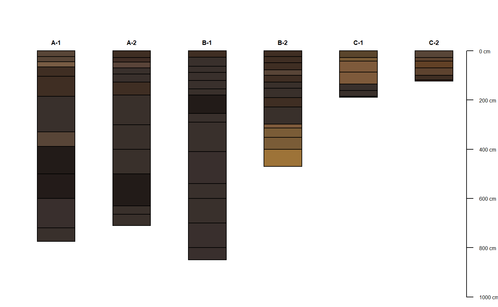
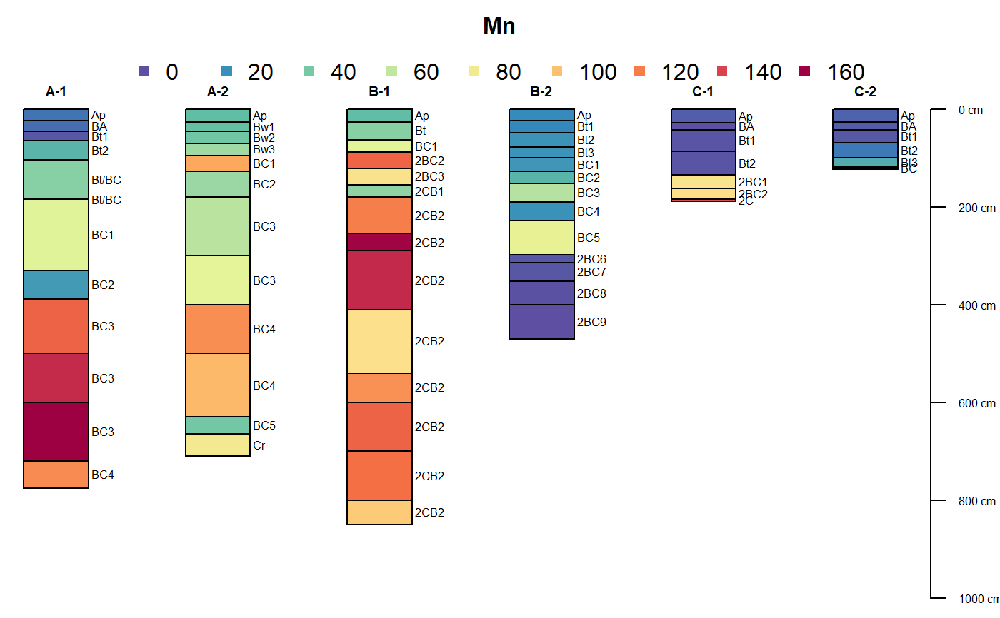
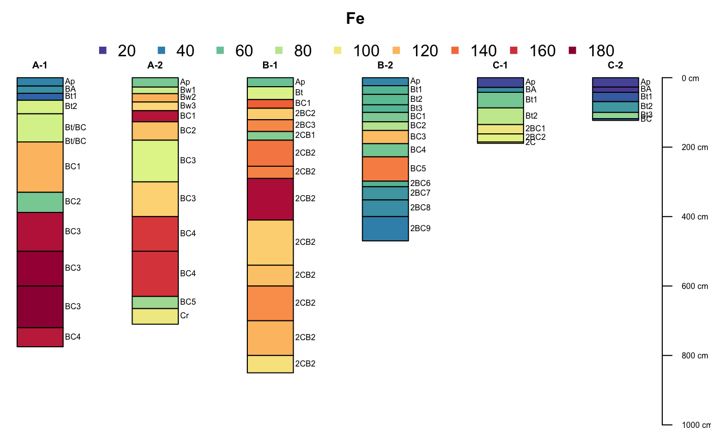
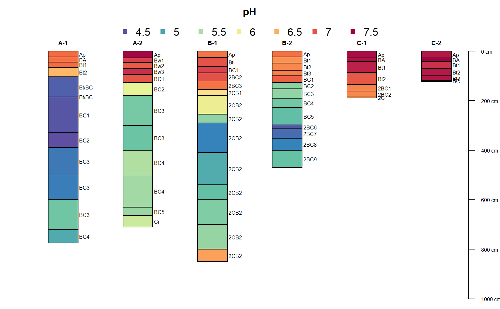
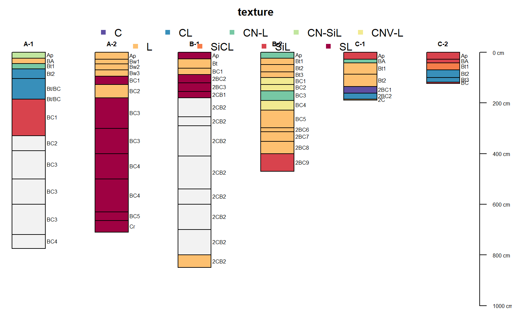

sp6.RdSoil Physical and Chemical Data from Manganiferous Soils (Bourgault and Rabenhorst, 2011)
data(sp6)
A data frame with 30 observations on the following 13 variables.
idpedon name
namehorizon designation
tophorizon top boundary in cm
bottomhorizon bottom boundary in cm
colormoist soil color in Munsell notation
textureUSDA soil texture class
sandsand content by weight percentage
siltsilt content by weight percentage
clayclay content by weight percentage
FeDCB-extracted Fe in g/kg (see citation)
MnDCB-extracted Mn in g/kg (see citation)
Ctotal organic carbon as g/kg
pHmeasured in 1:1 H20 slurry
Dbbulk density (g/cc), clod method
Selected soil physical and chemical data from (Bourgault and Rabenhorst, 2011).
http://www.sciencedirect.com/science/article/pii/S0016706111001972
Rebecca R. Bourgault, Martin C. Rabenhorst. 2011. Genesis and characterization of manganiferous soils in the Eastern Piedmont, USA. Geoderma. 165:84-94.
# setup environment library(aqp) data(sp6) # init SPC depths(sp6) <- id ~ top + bottom # convert non-standard Munsell colors sp6$soil_color <- getClosestMunsellChip(sp6$color) # profile sketches par(mar=c(0,0,3,0)) plot(sp6, color='soil_color')#>#>#>#>#>